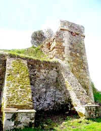
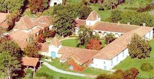
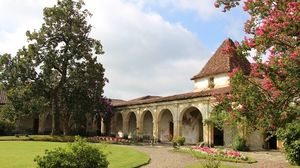
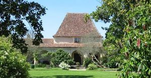
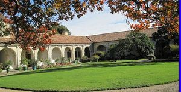
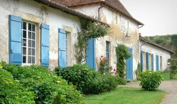
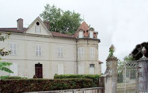
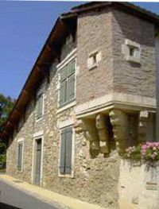

Recensement Jean-Claude Truffet
| Département | 40 — Landes |
| Canton | Montfort en Chalosse |
| Commune | Gaujacq |
| Type d'édifice | Chartreuse |
| Période d'origine | XVII |








GAUJACQ, au XIV seicle possession de la famille de Navailles, puis passe par alliance aux Caupenne Archambaud, chambellan de Gaston de Phébus, Marguerite de Caupenne apporte par alliance en 1518 la baronnie aux Foix Saint-Germain, une des descendante Jeanne de Montluc de Foix princesse de Chabanais épouse en 1648 Charles de Sourdis frère de François cardinal archevêque de Bordeaux, de 1648 à 1653 destruction du château médiéval, au XVIIe siècle construction de la chartreuse est une demeure seigneuriale, appelé château. Elle a été bâtie par l'héritier, Le cardinal François d'Escoubleau de Sourdis, lieutenant-général des armées du Roi Louis XIV, ne sétait pas trompé quand il a fait construire ce château en 1686. Lendroit est idéalement situé sur la hauteur avec dun côté vue sur le village de Gaujacq et de lautre côté sur les Pyrénées. A la mort de François de Sourdis le domaine passe à sa fille unique Angélique qui épouse François-Gilbert Colbert marquis de Saint-Pouange, les deux fils le vendent en 1736 à Jean-Gabriel de Cazenave descendant des Caupenne. Le domaine est transmis en période de la Révolution aux Deschault de Monredon, aux Dupuis, aux Capdepont et à la famille Casedevant, qui ont acheté le château en 1960. A trois kilomètres au nord ouest le château de Bastenne et la maison-forte de Borda, léchauguette dressée au coeur du village est le témoin de lancien château de Borda, autour duquel fut bâti le village.
Gaujacq, était une citadelle féodale elle-même édifiée sur le site d'un castrum gallo-romain. Derrière le château actuel on peut encore voir quelques restes des hauts remparts et les anciens fossés d'une grande enceinte de presque 800 mètres de circonférence autour du plateau. Sa construction à litalienne, avec une galerie autour dun jardin fait presque penser à un cloître. Il est, par sa construction et son style, unique en Europe. Les appartements du XVIIe siècles sorganisent autour de quarante-quatre arcades cintrées, scandées par des pilastres dont les chapiteaux ioniques sont surmontés de figures mithologiques et on y trouve encore des boiseries et panneaux de cette époque, de quatre corps de bâtiments en un seul niveau éclairés par des baies à petits carreaux. Au sud et au nord les portiques du bâtiment présente une baies cintrées avec fronton triangulaires à consoles remplacés par de pavillon à haute toiture. Ce château est entièrement de plain-pied et possède une cour intérieure et un « jardin des délices » évoquant lItalie de la Renaissance. Son architecture sorganise autour de ce jardin intérieur, entouré dune galerie à litalienne. Ses appartements, datant du XVIIe et XVIIIe siècle, sont meublés et habités, décorés de boiseries et de panneaux peints. Depuis le jardin d'agrément datant du XVIIe siècle, on jouit d'une vue sur les Pyrénées, de la Rhune jusqu'au Pic du Midi de Bigorre. Le château de Gaujacq est classé M.H.
Cardinal François d'Escoubleau de Sourdis
"
Château de Gaujacq 43° 37' 58 nord, 0° 45' 35 ouest, de Bastenne grav 7 et de Borda grav 8